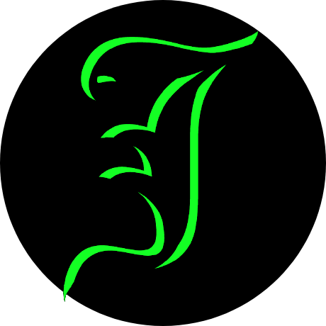

Jin Hwa David Cavalari
Sobre:
Desenvolvedor de 25 anos, nascido em Porto Murtinho - MS e atualmente morando no Paraná. Interessado em desenvolvimento web e criação de aplicações. Possui experiência profissional em logística e estoque e atualmente cursa Tecnologia em Sistemas para Internet na UTFPR.
Tecnologias:
- HTML, CSS
- JavaScript
- Python
-
Firebase
- Autenticação Google
- Banco de Dados
- Git
- PWA
Tenho interesse em programação desde a adolescência, quando comecei a desenvolver meus primeiros jogos em JavaScript. Entre os projetos desenvolvidos está o FlightBird, um jogo inspirado em Flappy Bird que foi publicado comercialmente na CodeCanyon (Envato). Abaixo, disponibilizo uma versão demonstrativa do projeto.
Trabalho / Sonho:
Meu objetivo é abrir minha própria empresa de tecnologia, conquistar independência profissional e financeira e ter mais liberdade sobre meu trabalho e meu tempo. Também quero construir uma vida tranquila e estável, mas sem deixar de aproveitar momentos de adrenalina de vez em quando.
Projetos:
Jogo desenvolvido em JavaScript inspirado em Flappy Bird. Projeto comercial publicado na Envato/CodeCanyon.
Ferramenta para criação/desenvolvimento de aplicações web.
Aplicativo web feito para testar o WebAppForge, com suporte a instalação como PWA no Android.
Gostos / Hobby:
-
Programação
-
Jogos
-
Valorant
-
League Of Legends
-
Xadrez
-
Ping Pong
-
-
Artes Marciais
-
Exercício Físico